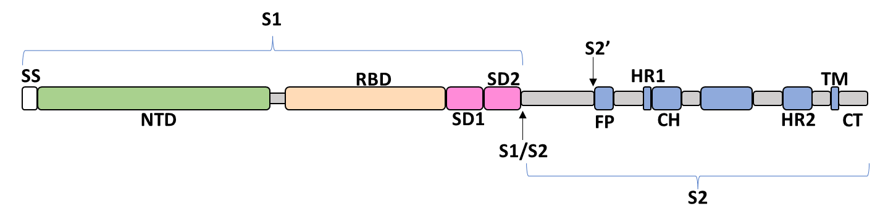

SARS-CoV-2 Evolutionary Dynamics
Comprehensive tracking of viral evolution, variant emergence, and global spread through high-resolution genomic epidemiology.
Understanding the Evolutionary Trajectory
Since its emergence in late 2019, SARS-CoV-2 has accumulated numerous mutations across its genome. Key variants such as Alpha, Delta, and Omicron have successively dominated global transmission, driven by changes in transmissibility, immune evasion, and virulence. The Deep Evolution Tracing System integrates time-calibrated phylogenetic trees, mutational signatures, and epidemiological metadata to provide a detailed view of these evolutionary events.
Our platform leverages daily updated sequences from GISAID and NCBI, enabling near real-time tracking of emerging lineages. Researchers can explore clade dynamics, mutation frequencies, and lineage replacement patterns across different geographical regions and time windows.
Spike Glycoprotein Domains


Global Evolution Snapshot
If the interactive panel does not load in your browser, open directly: Nextstrain Global | WHO Variant Tracking | Our World in Data
📊 Key Variants and Their Characteristics
| Variant | WHO Label | First Detected | Spike Mutations | Relative Fitness |
|---|---|---|---|---|
| Alpha | Alpha | Sep 2020 | N501Y, D614G | +50% |
| Delta | Delta | Oct 2020 | L452R, P681R | +60% |
| Omicron BA.1 | Omicron | Nov 2021 | ~30 mutations | +100% |
| Omicron BA.5 | Omicron | Mar 2022 | L452R, F486V | High immune escape |
| JN.1 | Omicron | Sep 2023 | L455S, F456L | Enhanced transmissibility |
| KP.2 | VUM | 2024 | R346T, F456L, V1104L | Monitored descendant of JN.1 |
| KP.3 | Omicron lineage | 2024 | S31 deletion profile (lineage-related) | Lineage with monitored descendants |
| XFG | VUM (latest WHO) | 2025 | R346T, K444R, V445R, F456L, N487D, Q493E | Newest VUM listed by WHO (23 Feb 2026 update) |
Core Tracking Metrics
| Metric | Value | Notes |
|---|---|---|
| Tracked lineages | Major VOC + selected VOI | Configurable list by region and time |
| Update cadence | Daily/weekly | Depends on sequence ingestion pipeline |
| Data sources | GISAID, NCBI | Plus local metadata curation |
Mutation Tracker
Monitor lineage-defining mutations across time and geography. Explore interactive heatmaps and frequency plots.
Launch tool →Global Phylogeny
View time-resolved phylogenetic trees with geographic annotations. Filter by date, region, and lineage.
Explore trees →Data Downloads
Access curated sequence alignments, metadata tables, and tree files for downstream analysis.
Download →📚 References & Acknowledgements
- GISAID: Global Initiative on Sharing All Influenza Data — acknowledgement
- Nextstrain: Real-time tracking of pathogen evolution
- Our research: Deep Evolution Tracing System v2.0 — manuscript under review
For detailed methodology, please refer to the documentation.